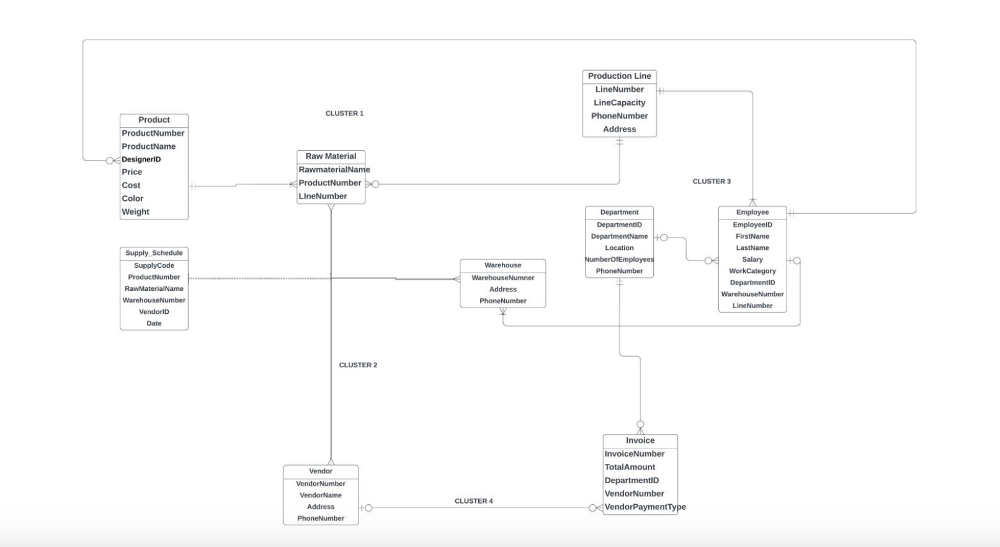
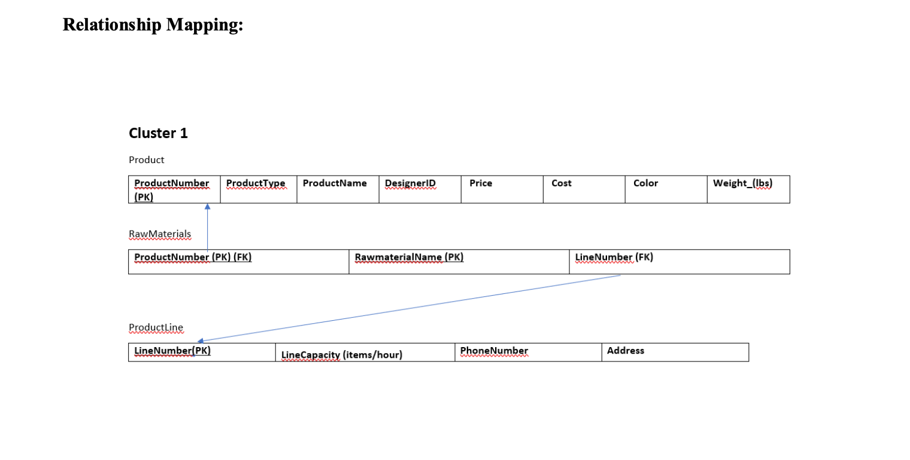
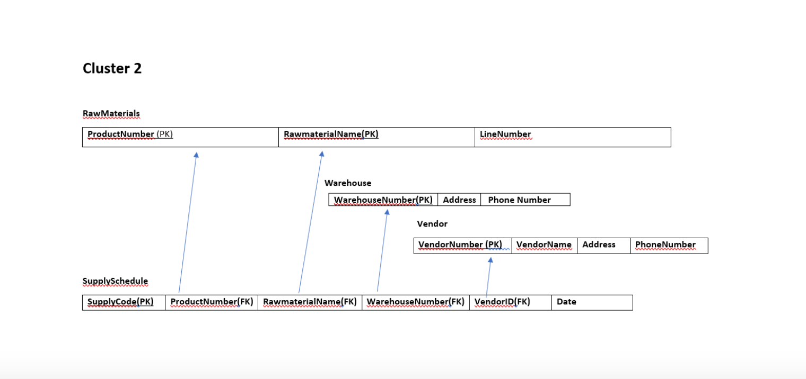
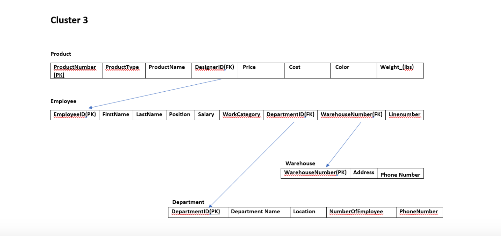
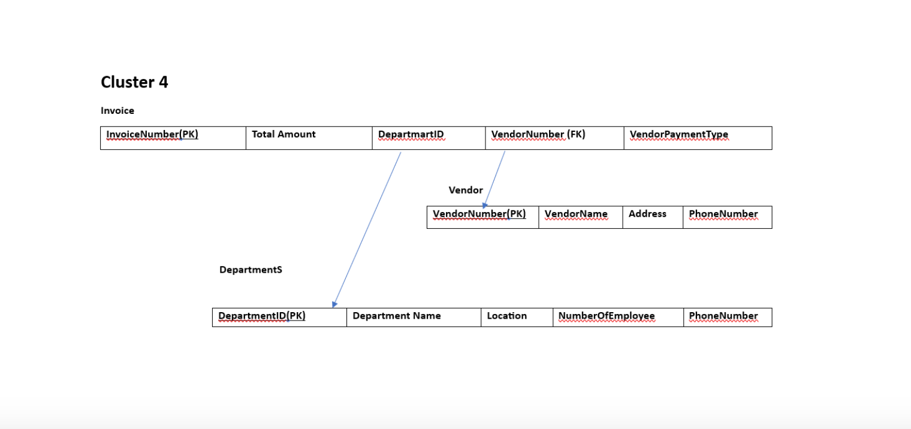
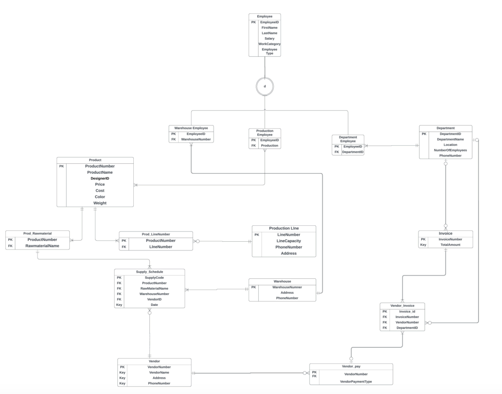

Abstract
In the rapidly evolving landscape of manufacturing and supply chain management, the need for an integrated system to streamline operations, manage resources efficiently, and ensure financial oversight has never been greater. To address these challenges, our project aims to develop a comprehensive ERP DB Schema for XYZ Steels Private Ltd. This database will provide a centralized repository for maintaining operations, optimizing material procurement, and ensuring seamless financial operations. This model will help the company run smoothly, organize its different parts, buy materials efficiently, and keep track of all financial invoices.
Problem Statement
Our company often deals with complex operational processes, including employee management, product management, vendor invoices, and managing warehouses. The chances of facing inefficiencies in deliverables, time management, and financial discrepancies are immense. To address these issues, our module sets out to create a robust and efficient DB Schema which will:
- Ensure employees are tagged to specific departments, warehouses, and production lines to maintain a seamless environment.
- Manage the entire product lifecycle from Design -> Plan -> Implementation -> Production.
- Efficiently manage the flow of raw materials, by keeping track of whether they originate from warehouses or are directly supplied by the vendors.
- Track and process vendor invoices with proper details to ensure seamless financial operations within the accounting department.
Methodology
As per the requirement being gathered, and as the tasks involve moderate complexity in Database design and data manipulation, we have chosen the Rapid Application Development (RAD) methodology for developing this Enterprise Resource Planning (ERP) Database Schema as it emphasizes iterative development, prototyping, and collaboration between stakeholders. RAD is particularly beneficial when the requirements are not fully understood at the beginning, as it allows for flexibility and frequent feedback. RAD allows for quick iterations and continuous feedback from stakeholders, ensuring that the repository is systematically organized and aligned with evolving project requirements and enables the gradual development of the Entity Relationship Diagram, allowing for continuous refinement based on stakeholder feedback.
ER Diagram


Cluster 1
Cluster 1 includes the entities Product and Production Line. The Product entity contains attributes such as ProductNumber, ProductName, Price, Cost, Color, Weight, and Raw Material. The Production Line entity includes LineNumber, LineCapacity, PhoneNumber, and Address. The business rules specify that each product must be produced by one specific production line, and each production line can produce only one type of product. For repair purposes, production lines may produce no products. Referential constraints are defined for ProductNumber as the primary key in Product, LineNumber as the primary key in Production Line, and LineNumber as a foreign key in Product.

Cluster 2
Cluster 2 consists of the entities Vendor, Warehouse, Raw Material, and Supply Schedule. The Vendor entity includes VendorID, VendorName, Address, and PhoneNumber. The Warehouse entity comprises WarehouseNumber, Address, and PhoneNumber. The Raw Material entity includes RawMaterialName, ProductNumber, and LineNumber, while the Supply Schedule entity consists of SupplyCode, ProductNumber, RawMaterialName, WarehouseNumber, and VendorID. The business rules state that each vendor can supply many raw materials to any number of warehouses, and raw materials can be supplied by multiple warehouses and vendors. Warehouses must be supplied with at least one raw material. Referential constraints are defined for ProductNumber and RawMaterialName as primary keys and foreign keys in Raw Material, LineNumber as a foreign key in Raw Material, and VendorID as a foreign key in Supply Schedule.

Cluster 3
Cluster 3 includes the entities Employee, Warehouse, Department, and Product. The Employee entity contains attributes such as EmployeeID, FirstName, LastName, Position, Salary, WorkCategory, DepartmentID, WarehouseNumber, and LineNumber. The Warehouse entity includes WarehouseNumber, Address, and PhoneNumber. The Department entity comprises DepartmentID, DepartmentName, Location, NumberOfEmployees, and PhoneNumber. The Product entity includes ProductNumber, ProductName, DesignerID, Price, Cost, Color, and Weight. The business rules specify that employees work in one department, warehouse, or production line, and only design department employees design products. Each product has exactly one designer. Referential constraints are defined for DepartmentID, WarehouseNumber, and LineNumber as foreign keys in Employee, and DesignerID as a foreign key in Product.

Cluster 4
Cluster 4 includes the entities Invoice and Department. The Invoice entity contains attributes such as InvoiceNumber, TotalAmount, VendorNumber, and VendorPaymentType. The Department entity includes DepartmentID, DepartmentName, Location, NumberOfEmployees, and PhoneNumber. The business rules state that vendors submit invoices when they supply raw materials, and these invoices are processed by the accounting department. Referential constraints are defined for VendorNumber as a foreign key in Invoice.
Normalization
- Product: The table is already in 1NF, 2NF, and 3NF, as all attributes are fully dependent on the primary key {ProductNumber}, with no partial or transitive dependencies.
- Raw Material: Initially in 1NF, the table required splitting into two tables to eliminate partial dependencies, thus achieving 3NF. The new tables are
rawmaterial and Product.
- Production Line: This table meets the criteria for 1NF, 2NF, and 3NF, with no partial or transitive dependencies. All attributes are fully dependent on the primary key {LineNumber}.
- Supply Schedule: The table is in 1NF, 2NF, and 3NF, as there are no partial dependencies, and each attribute depends on the primary key {SupplyCode} with no transitive dependencies.
- Warehouse: Already in 1NF, 2NF, and 3NF, as all attributes depend entirely on the primary key {WarehouseNumber} with no partial or transitive dependencies.
- Vendor: This table meets the criteria for 1NF, 2NF, and 3NF, with all attributes fully dependent on the primary key {VendorNumber}, and no transitive dependencies.
- Department: The table is already normalized to 1NF, 2NF, and 3NF, with no partial or transitive dependencies, and all attributes fully dependent on the primary key {DepartmentID}.
- Employee: Initially in 1NF and 2NF, the table was split into four tables (
Employee, Department_employee, Production_line_employee, Warehouse_employee) to handle subtype-supertype relationships, achieving 3NF.
- Invoice: The table is normalized to 3NF by splitting it into two tables (
Vendor and Invoice) to remove transitive dependencies, with all attributes fully dependent on the primary key {InvoiceNumber}.
This normalization process ensures the data integrity and efficiency of the database, optimizing operations and maintaining a seamless flow of information across different entities.

Oracle Queries Analysis Summary
And also we implemented Oracle queries in the project demonstrate the SQL commands for creating, managing, and querying the database tables. These queries include the creation of tables with primary and foreign keys, insertion of data into these tables, and various select statements to retrieve and manipulate data. The queries ensure data integrity and enforce relationships between entities, supporting the normalization process and adhering to business rules and constraints. This systematic approach showcases the practical application of theoretical database principles to address the needs of XYZ Steels Private Ltd efficiently.
Conclusion
As a culmination to the iterative approach and based on the identified problem areas such as, employee management, product lifecycle tracking, raw material monitoring, and vendor invoice processing, have been thoroughly considered and integrated into our schema. Our project timeline outlines the iterative development process, with specific tasks and milestones set for each iteration. We anticipate continuous feedback from stakeholders and aim to refine our schema progressively. Our team will maintain consistency and commitment to delivering a comprehensive ERP Database Schema that will optimize XYZ Steels Private Ltd to operate seamlessly, efficiently manage its resources, and maintain a transparent financial system. We look forward to the successful execution of this project and its positive impact on the company's operations.